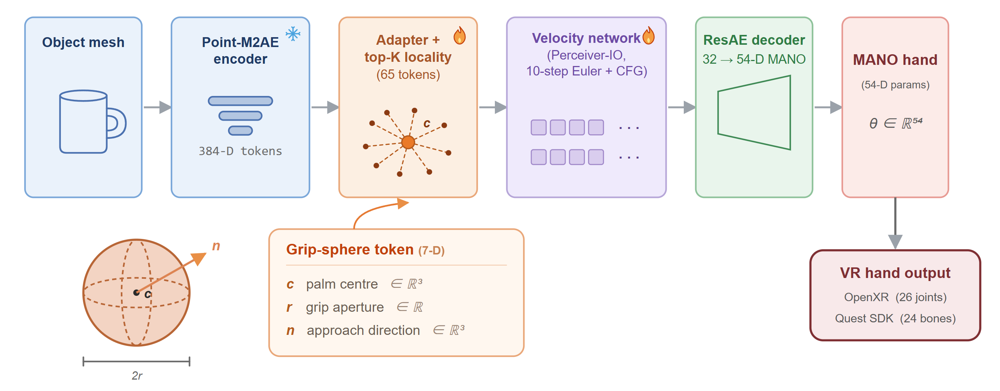
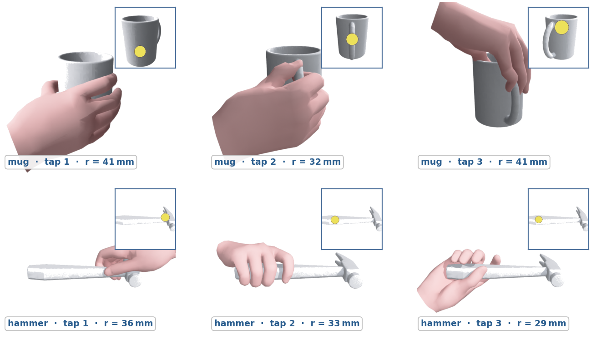

GraspAuto generates realistic hand grasps on ten objects, two taps each. A single deployable checkpoint produces every pose; the scene rotates so the contact configuration is visible from multiple angles.
GraspAuto is a method for generating a realistic VR hand grasp from a single user tap on a 3D object, producing a controllable pose that conforms to the indicated contact point without motion-capture recording or per-joint tuning. Inference fits within a standalone VR headset's latency budget, so the same system serves content creators as an offline grasp-authoring tool and VR applications as a live hand-synthesis module at runtime.
The key idea is a geometric conditioning token, a grip-sphere specifying where to grasp, how wide to open, and from which direction to approach, easy to elicit from a VR controller and dataset-agnostic enough for joint training across grasp corpora. On ContactPose, a single GraspAuto checkpoint transfers to never-seen object classes roughly twice as reliably as a heatmap-conditioned baseline with the same backbone and training data.


Mode-cover error (mm) on ContactPose. We report TRUE SEEN on 21 object classes (N=179 samples) and CP-UNSEEN on the remaining 4 classes (bowl, headphones, toothbrush, wine_glass; 37 samples). Both subsets use participants disjoint from training; CP-UNSEEN is a per-class reporting split, not a class-level holdout. Latency quoted for Quest 3 is projected from an RTX 4090 measurement (34 ms, scaled conservatively).
| Config | TRUE SEEN | CP-UNSEEN | <10 mm | Latency |
|---|---|---|---|---|
| Codebook retrieval (ours, baseline) | 62.3 | - | 0% | 5 s |
| Heatmap-palm distill student | 12.48 | 27.9 | 36% | 60 ms |
| Sphere, CP-only | 12.36 | 15.92 | 45% | 60 ms |
| Sphere, CP + OakInk mix | 11.70 | 14.86 | 55% | 60 ms |
| Sphere, CP + OakInk filtered (shipped) | 10.64 | 13.70 | 59% | 60 ms |
| 8-member pool, GT oracle (mean) | 6.13 | 7.58 | 89% | 30 s |
| median | 5.14 | 6.79 | - | - |
| Consensus medoid (deployable, no GT) | 9.74 | 12.71 | 67% | 2 s |
Swapping the 11-D heatmap token for the 7-D grip-sphere cuts CP-UNSEEN bo-1 error from 27.9 to 13.70 mm (a 51% reduction) while keeping the single-checkpoint student real-time at 60 ms/tap.
The reference implementation (training, evaluation, ONNX export) and trained weights are available in this repository: github.com/crazycatseven/GraspAuto. The Unity Sentis integration for on-device VR deployment will be released soon. For questions or research-artefact access, please contact the authors directly.